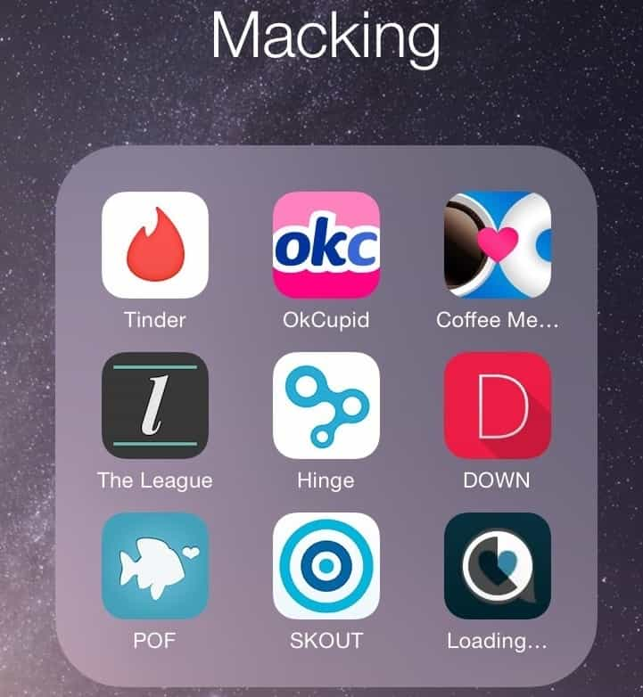

< < < Back
Rethinking Technology And Social Media Can Get You Laid And Paid – Return Of Kings
It’s a popular opinion around these parts of the internet that technology is ruining our lives. It has turned us into mindless, online status obsessed zombies, our women have become flooded with “thirsty” dudes and became antisocial, and all too often our social media accounts can act as a liability in today’s world of “free speech patrols” by our liberal friends.
She decides if you have a job or not
I don’t deny any of these things, but to sit around here and fantasize about the “good old days” that most of us are too young to have lived through while ignoring the realities of modern technology is silly and not very “red pill.”
We have to accept truth and play the hand that we are dealt, or else we slowly become those old guys that tell the hippies to cut their hair and stop listening to those rock and roll 8-Track tapes.
Grandpa Simpson is not a red pill role model
Technology is not going away. With that said, we need to look at today’s technological developments with purely selfish motivations. When you stop and think about it, technology can get you laid and paid. And don’t we want that?
Breaking Down technology
When looking at social media, what better place to start than Facebook. Yes, the cool guys among us are hipter enough that they deleted their Facebook accounts, and made sure that we all knew about it in the process. College Humor produced a great video on the topic:
But the reality for most of us is that Facebook is a great way to stay in touch and communicate with our friends. Facebook messenger is a free alternative to texting, and because you get to control who sees what on Facebook, it’s pretty easy to avoid the “social media witch hunt” that people say they fear.
I’ve done it successfully for years, often posting articles from Return Of Kings, as well as several anti-feminist memes directly to my wall, often to many likes and interesting conversations!
I also know that Facebook has directly gotten me laid numerous times. How? By putting me on the guestlist to some great nightclubs and lounges, informing me of events around the city I would have never heard of otherwise, getting invites to parties where I only somewhat knew the hosts, and of course – everyone’s favorite – the “I haven’t heard from you in years, you seem to be doing great for yourself” girl.
It’s easy to make Facebook work for you—all you have to do is examine the possibilities in a rational way.
Not Convinced?
I have recently used tumblr, yes, tumblr, to increase my online presence in a really positive way (Check out my personal account, as well as the tumblr version of Manosphere.com). “BUT TUMBLR IS SJW HEADQUARTERS,” people scream. Correct. And this means that tumblr can be a great source of that delicious “hater traffic” that everyone secretly craves.
And for all of the censorship that social justice warriors are known for, tumblr has not deleted a single GamerGate article. I mean, what else do you expect from a mostly pornographic site?
Maybe this bit of info changed your mind about tumblr, maybe it didn’t. For me it was a no-brainer – especially when I’m familiar with auto-posting and aggregate technology, so manosphr.tumblr.com requires zero maintenance on my part. I made it work for me, can you make it work for you?
Be Like Mike. Really. I’m Serious
Your greatest potential ally, however, is seen by many as an unlikely one, since it is mostly known for thirsty men and women willing to capitalize on it. Yes, I am talking about Instagram, and, believe it or not, it can skyrocket your game, and even make your money. With Instagram, and similar apps – you have the power to become somewhat like Michael Jordan.
Professional athletes are rich, no doubt about it. The minimum salary of an NBA player is over $500,000 a year. This is serious bank for 99.9% of us, but chump change for the real money men of the NBA—the owners. Of the 30 NBA teams, 20 are owned by people whose net worth is in the billions.
But one man stands out from that list: Michael Jordan. We all know him as the greatest basketball player that has ever lived, but his true wealth came from doing something that no other athlete before him has done – he became a brand, an image. And this brand continues to hold strong even today, many years after Jordan has played his last game of basketball. Heck, you know your brand is popular when people fight over it.
In the age of social media, anyone can become their own personal brand. That is how I use my instagtam—I showcase my humor, my travels, the cool, fun parts of my life. it’s essentially a resume for getting laid.
Yes – it is difficult at times to keep up appearances – sometimes even deadly, like in the case of fashion designer L’Wren Scott, who maintained an Instagram illusion of luxury despite being millions of dollars in debt. Don’t fall into this trap. Avoid Instagram altogether if it is not a positive for you, although some of you might use the old adage of “fake it till you make it.”
Adding the Instagram feed to my OKCupid profile has resulted in a much higher conversion rate. A girl once told me that she made the decision to write me back once she saw my Instagram—it made me “real” in her eyes. Yes, Instagram has gotten me laid.
But can it get you paid? For some people it has, and in ways Michael Jordan hasn’t even dreamed of.
Meet Jen Selter. Ass model.
Most of you have no doubt seen her incredible ass before. But there’s something more impressive about the 21-year-old from Roslyn, New York: her bank account. A sponsored post to her over 6 million Instagram followers reportedly costs $50,000, a sobering statistic considering 80% of the world lives on less than 10 dollars a day. Posting pictures of her ass on Instagram is making her rich and famous.
But Kid – there are better asses out there? Yes there are. Caitlin Rice is arguable one example, but (pun intended) notice her “paltry” 700,000 followers compared to Selter’s 6 million plus. Why is that? Because Caitlin Rice is slacking, and Jen Selter is a professional.
Caitlin Rice has poorly lit pictures, pictures with ugly friends, memes, and generally has a bunch of material there that takes away focus from her amazing body. Jen Selter is all business—every picture is well lit, beautiful, and showing off what the audience wants to see. That’s why she gets the big bucks.
Jen Selter is also a perfect example of another feature of the world of internet brands – success despite a complete lack of “credentials” from the traditional barriers of entry. She completely sidestepped the competitive bodybuilding, Crossfit, and obstacle race world to arguably become a bigger star and higher earner than the top athletes in these respective fields!
This is unheard of! Can you imagine a recreational basketball player getting a more profitable shoe deal than LeBron James? No, it’s ludicrous, and yet in the world of social media fame it happens over and over again.
Internet Fame And Money: Not Just For Hot Chicks Anymore
Look at two prominent millionaire gamers – PewDiePie and KSI. Both have achieved worldwide fame and fortune by broadcasting themselves playing video games. PewDiePie is the most subscribed user on youtube, KSI was recently featured on Vice showing off his riches – including a penthouse apartment in London and a Lamborghini.
These two men might be a lot of things – but they are not elite competitive gamers. That honor belongs to people like Danil Ishutin, who, while being the 7th highest earning pro gamer in the word – has not cracked a million dollars in competition earnings, or Daigo Umehara who, despite being the single most famous fighting game player of all time – has a day job at a nursing home.
My theory is that the time that Danil Ishutin and Daigo Umehara spend practicing, PewDiePie and KSI spend on self promotion. And when you’re a one man brand with a one man team, promotion can actually trump perfection.
The Next Generation Of Online Dating

Wanna peek into my world?
With all the talk of personal branding we forgot about the best part of technology. Now, you might recognize the old favorites – POF, OKCupid, Tinder, but there is a new movement afoot, spearheaded by Tinder in a move that many called the end of that company.
Tinder, Coffee Meets Bagel, Down, and Hinge limit the amount of users you can interact with on a daily basis and because of this women are not bombarded by a constant supply of attention from unlimited numbers of men, and people in general spend less time on the app, avoid burning themselves out, and in turn come back more often.
Yes, I said it, Tinder actually got better after the notorious “limited likes every 12 hours.” Because of the design of these apps, you can go through a wide array of matches in a very short time and avoid spending countless hours searching for and messaging new people on dating sites.
In fact, my favorite of these new type of apps—Coffee Meets Bagel—gives you one match a day. No need for an auto-swiper for this one. But yet this is the online dating platform that I have enjoyed the most success with in the past year.
The Key To Online Dating Success
Diversify, diversify, diversify! And I don’t mean it in the way that Social Justice Warriors mean it, so relax. Think of online dating as a sweet, awesome pool, and I’m inside with an innertube and noodle, while others are dipping their toes into the water, declaring it too cold and running away.
Dive in. Experiment. It costs you nothing, and by downloading a new app or signing up for a free service – you are increasing the amount of women you are exposed to every time. Also, being an early adopter is a great way to end up with your own personal brand.
Just ask Pei Ketron – Instagram early adopter and now a suggested user for everyone that just downloaded the app, despite not being an athlete, celebrity, or business mogul. She has over 700,000 followers as a plain old fashioned photographer. She was just at the right place at the right time. Now, I wonder how much money she can make ass modelling?
Read More: A Brazilian Man Talks About Game, Social Media, And How His Country Is Changing